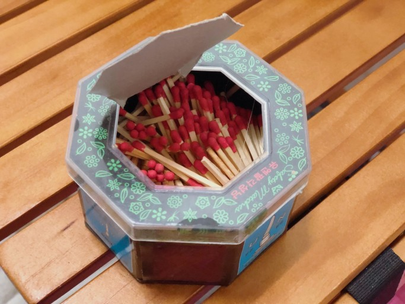

주기율표 15족 3주기에 속하는 원소로 원소기호는 P, 원자량은 30.974 g/mol, 녹는점 44.2℃, 끓는점 280.5℃, 밀도는 1.823 g/cm3이다. 자연상태에서 홑원소 상태로는 존재하지 않으며, 여러 개의 동소체 흰색, 붉은색, 검은색 인이 존재한다. 자연 상태에서 홑원소 상태로는 존재하지 않으며, 산소와 화합한 상태로 존재하거나 인회석에 포함되어 있다. 인화성이 커서 공기와 접촉하면 자연발화하여 초록빛의 인광을 내며 특이한 마늘 냄새가 난다. 진공상태에서 빛에 노출시키면 승화가 일어난다. 물에 녹지 않고 벤젠이나 클로로포름에 녹는다. 붉은색인은 흰색인을 쇠로 만든 전화 킬른(가마) 속에서 공기를 단절하고 약 200℃로 가열하여 만든다.
